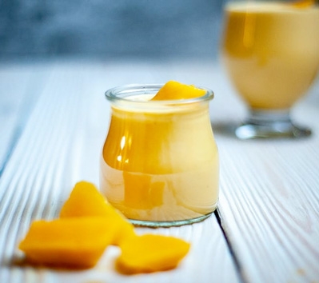
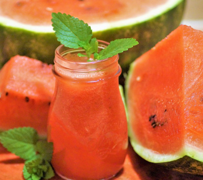
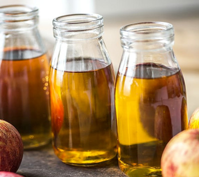

Welcome To Our Fresh Looking Penny Juice Website
Posted November 2 2023 by billy bob joe
PennyJuice is a revolutionary new product that is changing the way we drink juice. It is a healthy, low-calorie, preservative free and all natural pasteurized juice made from sustainable, locally-sourced fruits and vegetables. The key idea is to bring the
freshness and nutritional value of freshly squeezed juice and make it a convenient, portable drink option. With PennyJuice, you get the benefits of freshly-squeezed juice in a convenient and economical size. It also comes in an easy to carry resealable pouch, making it so that you can enjoy your juice on the go. This unique blend of juices offers a variety of flavors such as apple, watermelon, orange, lemon, lime, grapefruit, strawberry, pineapple and mango that can be blended to create refreshing combinations. Besides being healthy, PennyJuice is vegan friendly and gluten-free, making it applicable to individuals across a wide range of dietary needs. With PennyJuice, you can now enjoy your favorite beverages, both healthily and conveniently.

Top Ten Health Benefits of Juice
Posted November 1 2023 by billy bob joe
PennyJuice offers an incredible selection of juices to choose from, each one packed with a ton of vitamins and nutrients that our bodies need to stay healthy. Juicing is a great way to make sure our bodies get the vitamins and minerals they need each day, and with PennyJuice, you get more than just great health benefits — you get delicious and natural ingredients for a fraction of the cost. Here are the top ten benefits to adding PennyJuice to your daily routine:
1. Improves Digestion and Immunity – Drinking PennyJuice can help improve your digestion and immunity. The vitamins and minerals found in PennyJuice act as antioxidants, aiding to boost your immune system and helping to prevent disease.
2. Full of Healthy Vitamins and Minerals – PennyJuice contains vitamins and minerals like potassium, calcium, phosphorus, vitamin A, vitamin B6, vitamin C, and magnesium. It aids to your body’s daily needs.
3. Detoxifies Your Body – Drinking PennyJuice helps you to flush out unhealthy toxins and boost your metabolism, helping to cleanse your body of impurities.
4. Low in Calories – PennyJuice is an excellent way to cut back on calories while still getting all the nutritious benefits of fresh fruits and vegetables.
5. Full of Fiber – Juicing with PennyJuice provides the essential fiber your body needs to stay regular and healthy.
6. Improves Skin Health and Tone – Adding PennyJuice to your diet can help improve your skin health and complexion, helping to keep you looking young and radiant.
7. Helps to Balance Hormones – By adding plenty of PennyJuice to your daily routine, you can help regulate your hormones, which can lead to greater overall health.
8. Aids to Weight Loss – Juicing with PennyJuice is a great way to help aid in your weight loss efforts, helping you get to those desired goals.
9. Improves Concentration – The healthy nutrients found in PennyJuice help to improve your concentration, providing you with increased focus and clarity.
10. Easy to store and make – With PennyJuice, you can easily store and make your own juices at home. This affordable and convenient way to get your daily nutrition needs is a great way to keep your health on track.

Apple Juice
Posted October 29 2023 by billy bob joe
Apple juice is a beloved beverage that often gets overlooked in favor of fancier drinks. However, there are five excellent reasons why apple juice should get more recognition. Firstly, it can offer a refreshing alternative when water starts to become bland. Secondly, it packs a nutrition punch, with high levels of antioxidants such as vitamin C, quercetin and chlorogenic acid. Thirdly, it’s an easily accessible source of polyphenols, which can improve blood pressure, reduce cholesterol levels and aid digestion. Fourthly, apple juice contains energy-boosting nutrients like fructose, which make it an ideal wake-up beverage or pre-workout drink. Lastly, apple juice is naturally delicious, with its crisp and sweet flavor. Whether used as a drink, added to smoothies or used as an ingredient in recipes, there’s no denying the versatility of apple juice. Therefore, it’s high time that apple juice get its deserved recognition and respect.